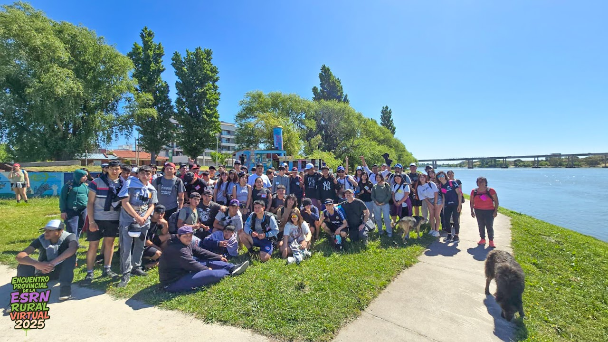

¿Cuánta gente junta puede convivir en paz?
Más de 120 personas de todas las sedes de la ESRN Rural Virtual se reunieron en Viedma y el balneario El Cóndor para convivir, compartir experiencias y demostrar que la comunidad educativa está más unida que nunca.
Durante cuatro días, estudiantes, tutores y familias recorrieron la costa, participaron de actividades recreativas, disfrutaron del cine móvil y vivieron momentos que quedarán en la memoria de todos.

Día 1: Llegada y costanera
Un colectivo llevó a todas las sedes hasta la costa de Viedma. Lo primero fue un paseo por la costanera, donde el aire del mar y las primeras caras conocidas hicieron que la emoción comenzara a crecer. Después, un chapuzón en la pileta compartido por todos.

Día 2: Cine y escuela
El segundo día fue para recorrer Viedma. Un paseo exhaustivo terminó en la escuela Paulo Sexto, donde todos compartieron el almuerzo y pudimos ver la película Yamka y el espíritu del volcán gracias al cine móvil. Una experiencia que nos unió aún más.
Día 3: Playa y chorizada
Al tercer día, todas las sedes convivimos en la playa de El Cóndor. Minijuegos, actividades y el sol de la costa hicieron que todos se divirtieran como nunca. Para cerrar la noche, una gran chorizada donde todos compartimos y nos despedimos antes del último día.
Día 4: Centro Cultural y despedida
El cuarto y último día, la mañana fue para el Centro Cultural de Viedma, donde presenciamos varios bailes y coros de niños a temas populares. Luego, cada sede se fue a su lugar natal, llevando consigo recuerdos inolvidables.
Más de 120 personas demostraron que la convivencia, el respeto y la alegría son posibles cuando compartimos un mismo camino. Porque cada sede dejó un poco de sí misma en Viedma y El Cóndor, este encuentro no fue solo un viaje, sino el recordatorio de que unidos somos una gran comunidad.